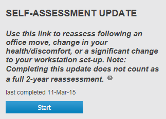
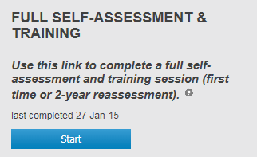
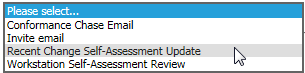

A Recent Change Self-Assessment Update email is not an automated email. The email may be sent manually to the user by a OES administrator. However, it may be configured as an automated email based on an attribute that signifies a person has moved location.
A OES Administrator should trigger a Recent Change Self-Assessment Update email to a user if the user has had a change in workstation location, arrangement, health, etc.
Prior to sending this email, please ensure:
The Recent Change Self-Assessment Update email will direct the user to their Dashboard Home tab.
If the user has completed a full Assessment & Training within the last 18 months, the Self-Assessment Update option will be available.

If the user has not completed a full Assessment & Training within the last 18 months, the Full Self-Assessment & Training will be the only option available to the user.
The Full Self-Assessment & Training option is always available to the end user. The user may choose to complete a Full Self-Assessment & Training instead of completing the Self-Assessment Update.

To send a Recent Change Self-Assessment Update email, choose Recent Change Self-Assessment Update from the pre-fabricated email dropdown.

The Recent Change Self-Assessment Update email will be sent to the user from your email address.